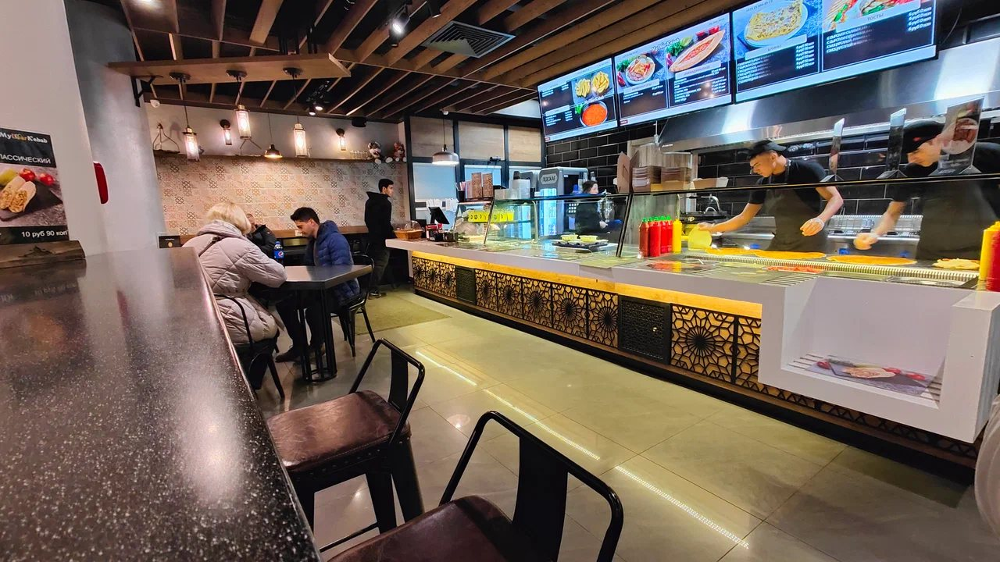
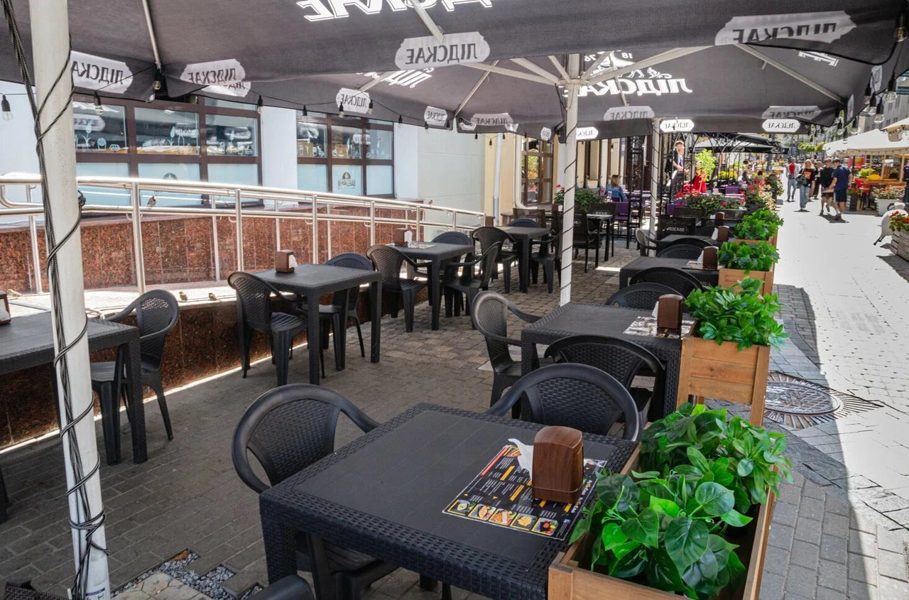
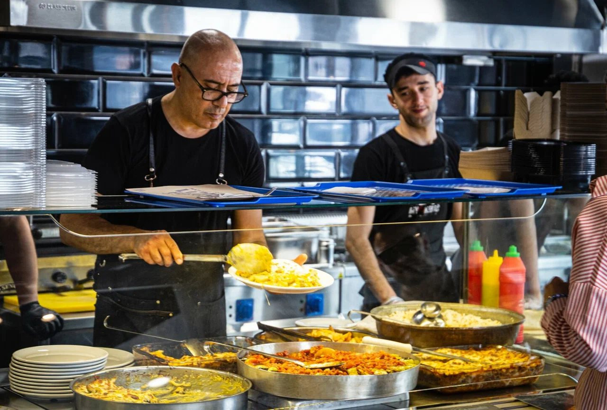

Минск · у метро Немига
My Dear Kebab
Шашлыки на углях, донер, фалафель, пиде и лахмаджун. Открытая кухня, тёплый свет, доставка и еда навынос.
ДоставкаНавыносКофе с собой
Не знаешь, что заказать?
Выбор наугад
Каждый раз три случайных блюда из меню. Не нравится? Перемешай.
Атмосфера
Загляни к нам



Проголодались?
Позвоните, закажите доставку или заходите к нам. Доставляет собственная курьерская служба.
Позвонить Смотреть меню